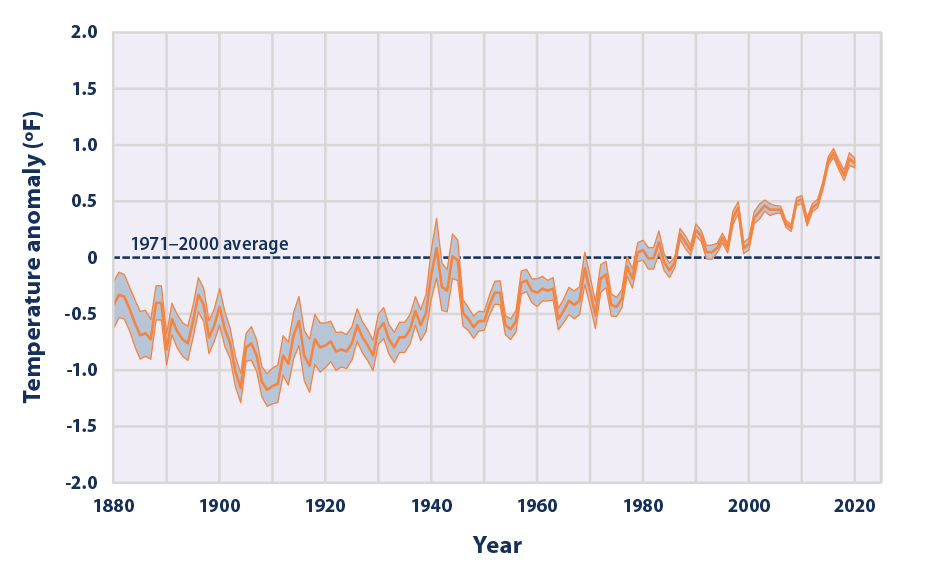
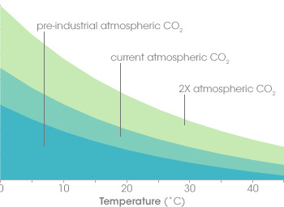
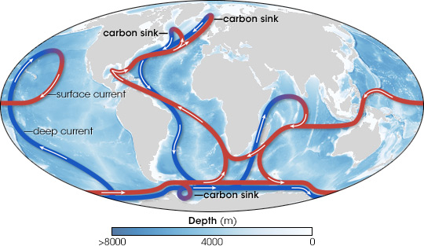
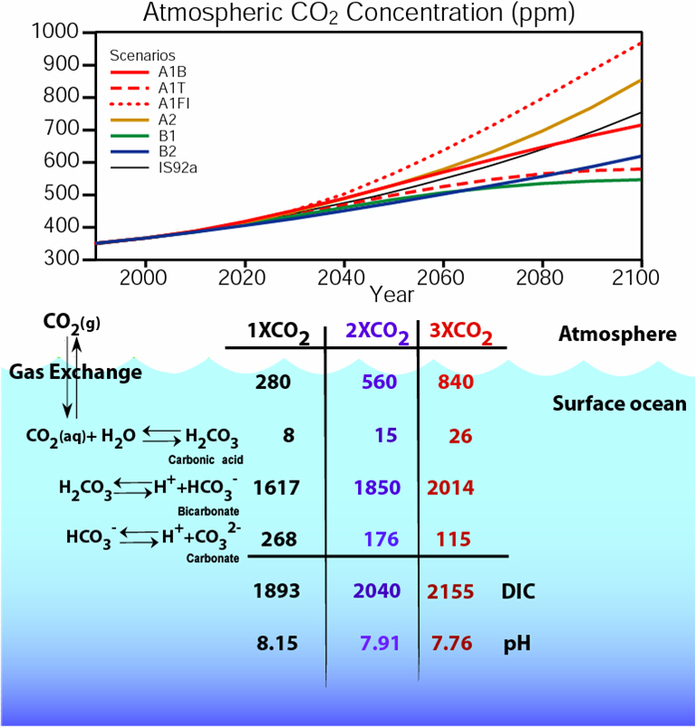
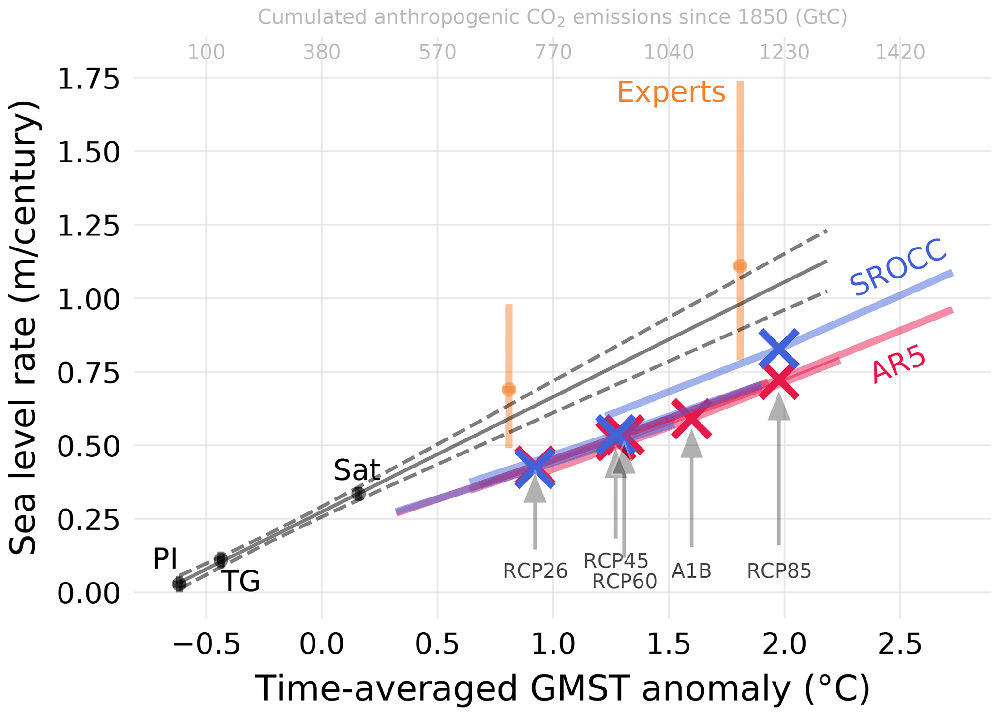
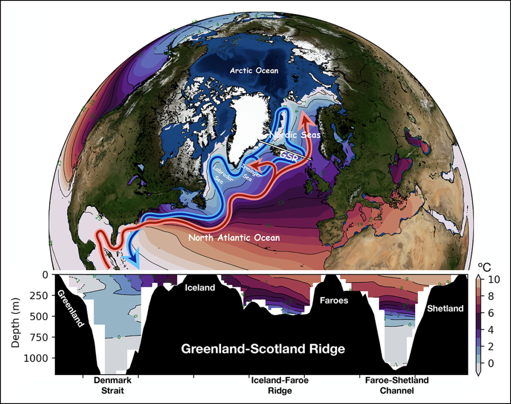
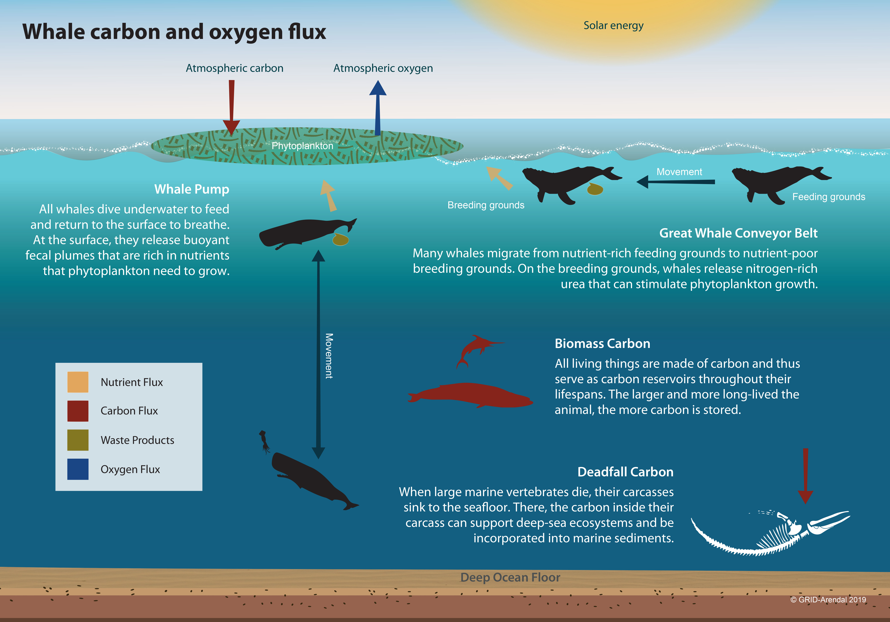
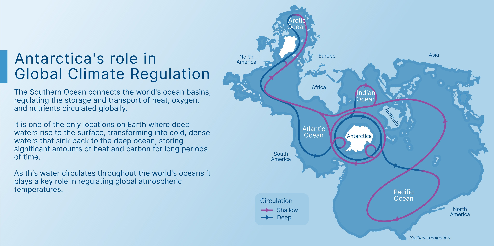

19 Ocean
19.1 Ocean Temperature
EPA
Based on the historical record, increases in sea surface temperature have largely occurred over two key periods: between 1910 and 1940, and from about 1970 to the present. Sea surface temperature appears to have cooled between 1880 and 1910.
Changes in sea surface temperature can alter marine ecosystems in several ways. For example, variations in ocean temperature can affect what species of plants, animals, and microbes are present in a location, alter migration and breeding patterns, threaten sensitive ocean life such as corals, and change the frequency and intensity of harmful algal blooms such as “red tide.”1 Over the long term, increases in sea surface temperature could also reduce the circulation patterns that bring nutrients from the deep sea to surface waters. Changes in reef habitat and nutrient supply could dramatically alter ocean ecosystems and lead to declines in fish populations, which in turn could affect people who depend on fishing for food or jobs.2,3
Because the oceans continuously interact with the atmosphere, sea surface temperature can also have profound effects on global climate. Increases in sea surface temperature have led to an increase in the amount of atmospheric water vapor over the oceans.4 This water vapor feeds weather systems that produce precipitation, increasing the risk of heavy rain and snow (see the Heavy Precipitation and Tropical Cyclone Activity indicators). Changes in sea surface temperature can shift storm tracks, potentially contributing to droughts in some areas.5 Increases in sea surface temperature are also expected to lengthen the growth season for certain bacteria that can contaminate seafood and cause foodborne illnesses, thereby increasing the risk of health effects.6

IUCN
The ocean absorbs vast quantities of heat as a result of increased concentrations of greenhouse gases in the atmosphere, mainly from fossil fuel consumption. The Fifth Assessment Report published by the Intergovernmental Panel on Climate Change (IPCC) in 2013 revealed that the ocean had absorbed more than 93% of the excess heat from greenhouse gas emissions since the 1970s. This is causing ocean temperatures to rise.
Data from the US National Oceanic and Atmospheric Administration (NOAA) shows that the average global sea surface temperature – the temperature of the upper few metres of the ocean – has increased by approximately 0.13°C per decade over the past 100 years. A 2012 paper published in the journal Geophysical Research Letters revealed that the deep ocean is also affected, with one third of the excess heat absorbed 700 m below the sea surface. Modelling studies published in IPCC’s 2013 Report predict that there is likely to be an increase in mean global ocean temperature of 1-4oC by 2100.
The ocean’s ability to absorb excess heat has shielded humans from even more rapid changes in climate. Without this oceanic buffer, global temperatures would have risen much more than they have done to date. IPCC’s Fourth Assessment Report published in 2007 estimated that the Earth had experienced a warming of 0.55°C since the 1970s. According to an analysis by the Grantham Institute, if the same amount of heat that has gone into the top 2,000 m of the ocean between 1955 and 2010 had gone into the lower 10 km of the atmosphere, the Earth would have seen a warming of 36°C.
Ocean warming leads to deoxygenation – a reduction in the amount of oxygen dissolved in the ocean – and sea-level rise – resulting from the thermal expansion of sea water and continental ice melting. The rising temperatures, coupled with ocean acidification (the decrease in pH of the ocean due to its uptake of CO2), affect marine species and ecosystems and, consequently, the fundamental benefits humans derive from the ocean.
Marine fishes, seabirds and marine mammals all face very high risks from increasing temperatures, including high levels of mortalities, loss of breeding grounds and mass movements as species search for favourable environmental conditions. Coral reefs are also affected by increasing temperatures which cause coral bleaching and increase their risk of mortality.
A 2012 report by the Food and Agriculture Organization of the United Nations estimates that marine and freshwater capture fisheries and aquaculture provide 4.3 billion people with about 15% of their animal protein. Fisheries and aquaculture are also a source of income for millions of people worldwide. By altering distributions of fish stocks and increasing the vulnerability of fish species to diseases, ocean warming is a serious risk to food security and people’s livelihoods globally. Economic losses related to ocean warming are likely to run from tens to hundreds of millions of dollars.
Rising temperatures also affect vegetation and reef-building species such as corals and mangroves, which protect coastlines from erosion and sea-level rise. Rising sea levels and erosion will particularly affect low-lying island countries in the Pacific Ocean, destroying housing and infrastructure and forcing people to relocate.
The rise in sea surface temperatures is causing more severe hurricanes and the intensification of El Niño events bringing droughts and floods. This can have significant socio-economic and health effects in some regions of the world.
Warming ocean temperatures are linked to the increase and spread of diseases in marine species. Humans risk direct transmission of these diseases when consuming marine species, or from infections of wounds exposed in marine environments.

19.2 Ocean-Atmosphere Carbon Balance
NASA
For eons, the world’s oceans have been sucking carbon dioxide out of the atmosphere and releasing it again in a steady inhale and exhale. The ocean takes up carbon dioxide through photosynthesis by plant-like organisms (phytoplankton), as well as by simple chemistry: carbon dioxide dissolves in water. It reacts with seawater, creating carbonic acid. Carbonic acid releases hydrogen ions, which combine with carbonate in seawater to form bicarbonate, a form of carbon that doesn’t escape the ocean easily.

Figure: The concentration of carbon dioxide (CO2) in ocean water (y axis) depends on the amount of CO2 in the atmosphere (shaded curves) and the temperature of the water (x axis). This simplified graph shows that as atmospheric CO2 increases from pre-industrial levels (blue) to double (2X) the pre-industrial amounts (light green), the ocean CO2 concentration increases as well. However, as water temperature increases, its ability dissolve CO2 decreases. Global warming is expected to reduce the ocean’s ability to absorb CO2, leaving more in the atmosphere…which will lead to even higher temperatures.
As we burn fossil fuels and atmospheric carbon dioxide levels go up, the ocean absorbs more carbon dioxide to stay in balance. But this absorption has a price: these reactions lower the water’s pH, meaning it’s more acidic. And the ocean has its limits. As temperatures rise, carbon dioxide leaks out of the ocean like a glass of root beer going flat on a warm day. Carbonate gets used up and has to be re-stocked by upwelling of deeper waters, which are rich in carbonate dissolved from limestone and other rocks.
In the center of the ocean, wind-driven currents bring cool waters and fresh carbonate to the surface. The new water takes up yet more carbon to match the atmosphere, while the old water carries the carbon it has captured into the ocean.
The warmer the surface water becomes, the harder it is for winds to mix the surface layers with the deeper layers. The ocean settles into layers, or stratifies. Without an infusion of fresh carbonate-rich water from below, the surface water saturates with carbon dioxide. The stagnant water also supports fewer phytoplankton, and carbon dioxide uptake from photosynthesis slows. In short, stratification cuts down the amount of carbon the ocean can take up.
The ocean does not take up carbon uniformly. It breathes, inhaling and exhaling carbon dioxide. In addition to the wind-driven currents that gently stir the center of ocean basins (the waters that are most limited by stratification), the ocean’s natural, large-scale circulation drags deep water to the surface here and there. Having collected carbon over hundreds of years, this deep upwelling water vents carbon dioxide to the atmosphere like smoke escaping through a chimney. The stronger upwelling brought by the cold phase of the Pacific Decadal Oscillation apparently enhanced the size of the chimney and let more carbon escape to the atmosphere.

Figure: The global oceans are connected by deep currents (blue lines) and surface currents (red). Carbon from the atmosphere enters the ocean depths in areas of deep water formation in the North Atlantic and offshore of the Antarctic Peninsula. Where deep currents rise towards the surface, they can release “fossil” carbon dioxide stored centuries ago.
After 30 years of measurements, the ocean carbon community is realizing that tracking human-induced changes in the ocean is not as easy as they thought it would be. It wasn’t a mere matter of measuring changes in carbon concentrations in the ocean over time because the natural carbon cycle in the ocean turned out to be a lot more variable than they imagined. “We discovered that natural processes play such an important role that the signals they generate can be as large as or larger than the anthropogenic signal,” says Feely. “Now we are trying to address how these decadal changes affect the uptake of carbon. Once we account for these processes, we can remove them from the data set and calculate the anthropogenic carbon dioxide as the residual.” But to track the increasingly complicated carbon balance sheet, the ocean community needed models, mathematical simulations of the natural world.
…
Stratification might wind up having competing effects on the overall carbon cycle, with saturation slowing carbon dioxide uptake in surface waters, but also suppressing venting.
“The link between the destruction of the ozone layer, the changing wind patterns, and the impact on the carbon cycle is the thing that makes Le Quéré’s paper unique,” says Feely. “It links back to man-made impacts on the climate.” The idea that the man-made ozone hole and global warming have changed the Southern Ocean carbon sink is “disturbing on the one hand, but extremely interesting also,”
Scientists realized that to understand the ocean carbon cycle, they are going to have to look for the human fingerprint in ocean circulation and biology, not just in ocean chemistry.
Water Encyclopedia
Of the three places where carbon is stored—atmosphere, oceans, and land biosphere—approximately 93 percent of the CO 2 is found in the oceans. The atmosphere, at about 750 petagrams of carbon (a petagram [Pg] is 10 15 grams), has the smallest amount of carbon.
Approximately 90 to 100 Pg of carbon moves back and forth between the atmosphere and the oceans, and between the atmosphere and the land biosphere. Although these exchange rates are large relative to the total amount of carbon stored in the atmosphere, the concentration of CO 2 was constant.
All trees, nearly all plants from cold climates, and most agricultural crops respond to increasing atmospheric CO 2 levels by increasing the amount of CO 2 they take up for photosynthesis .
The oceans contain about 50 times more CO 2 than the atmosphere and 19 times more than the land biosphere. CO 2 moves between the atmosphere and the ocean by molecular diffusion when there is a difference between CO 2 gas pressure (pCO 2 ) between the atmosphere and oceans. For example, when the atmospheric pCO 2 is higher than the surface ocean, CO 2 diffuses across the air-sea boundary into the sea water. The oceans are able to hold much more carbon than the atmosphere because most of the CO 2 that diffuses into the oceans reacts with the water to form carbonic acid and its dissociation products, bicarbonate and carbonate ions . The conversion of CO 2 gas into nongaseous forms such as carbonic acid and bicarbonate and carbonate ions effectively reduces the CO 2 gas pressure in the water, thereby allowing more diffusion from the atmosphere.
The oceans are mixed much more slowly than the atmosphere, so there are large horizontal and vertical changes in CO 2 concentration. In general, tropical waters release CO 2 to the atmosphere, whereas high-latitude oceans take up CO 2 from the atmosphere. CO 2 is also about 10 percent higher in the deep ocean than at the surface. The two basic mechanisms that control the distribution of carbon in the oceans are referred to as the solubility pump and the biological pump.
olubility Pump.
The solubility pump is driven by two principal factors. First, more than twice as much CO 2 can dissolve into cold polar waters than in the warm equatorial waters. As major ocean currents (e.g., the Gulf Stream) move waters from the tropics to the poles, they are cooled and can take up more CO 2 from the atmosphere. Second, the high latitude zones are also places where deep waters are formed. As the waters are cooled, they become denser and sink into the ocean’s interior, taking with them the CO 2 accumulated at the surface. Biological Pump.
Another process that moves CO 2 away from the surface ocean is called the biological pump. Growth of marine plants (e.g., phytoplankton) takes CO 2 and other chemicals from sea water to make plant tissue. Microscopic marine animals, called zooplankton, eat the phytoplankton and provide the basis for the food web for all animal life in the sea. Because photosynthesis requires light, phytoplankton only grow in the nearsurface ocean, where sufficient light can penetrate.
Although most of the CO 2 taken up by phytoplankton is recycled near the surface, a substantial fraction, perhaps 30 percent, sinks into the deeper waters before being converted back into CO 2 by marine bacteria. Only about 0.1 percent reaches the seafloor to be buried in the sediments.
Scientists research the exchange of carbon dioxide between the atmosphere and ocean. This photograph shows the Ronald H. Brown, a research vessel of the National Oceanic and Atmospheric Administration, in the Equatorial Pacific Ocean during the GASEX II expedition in 2001. The floating instrument in the foreground measures a number of parameters associated with the transfer of CO2 across the air–sea interface. Scientists research the exchange of carbon dioxide between the atmosphere and ocean. This photograph shows the Ronald H. Brown, a research vessel of the National Oceanic and Atmospheric Administration, in the Equatorial Pacific Ocean during the GASEX II expedition in 2001. The floating instrument in the foreground measures a number of parameters associated with the transfer of CO 2 across the air–sea interface.
The CO 2 that is recycled at depth is slowly carried large distances by currents to areas where the waters return to the surface (upwelling regions). When the waters regain contact with the atmosphere, the CO 2 originally taken up by the phytoplankton is returned to the atmosphere. This exchange process helps to control atmospheric CO 2 concentrations over decadal and longer time scales.
n the 1980s, the oceans removed an estimated 2.0±0.6 Pg of anthropogenic CO 2 each year. Because humans are producing CO 2 at an everincreasing rate, the average ocean removal rate increased to 2.4±0.5 Pg of carbon each year in the 1990s.
The uptake of anthropogenic CO 2 by the oceans is driven by the difference in gas pressure in the atmosphere and in the oceans and by the air–sea transfer velocity. Because the pCO 2 is increasing in the atmosphere, CO 2 moves into the ocean in an attempt to balance the oceanic and atmospheric gas pressures.
The mechanisms that control the speed with which the CO 2 gas can move from the atmosphere to the oceans (air–sea transfer velocity) are not well understood today. Recent technological advances are helping scientists to better understand these mechanisms.
The transfer velocity is related to the surface roughness of the ocean and the wind speed. The difference in pCO 2 is related to the amount of carbon that is converted from CO 2 gas to other nongaseous carbon species in the sea water, like bicarbonate and carbonate ions. This so-called “buffer capacity” is what allows the oceans to hold so much carbon.
The relative concentrations of CO 2 (1%), bicarbonate ion (91%) and carbonate ion (8%) control the acidity (pH) of the oceans. Since CO 2 is an acid gas, the uptake of anthropogenic CO 2 uses up carbonate ions and lowers the oceanic pH. The carbonate ion concentration of surface sea water will decrease by an estimated 30 percent with a doubling of atmospheric CO 2 from preindustrial levels (280 to 560 ppm). As the carbonate ion concentration decreases, the buffer capacity of the ocean and its ability to take up CO 2 from the atmosphere is reduced.
Over the long term (millennial timescales), the ocean has the potential to take up approximately 85 percent of the anthropogenic CO 2 that is released to the atmosphere. As long as atmospheric CO 2 concentrations continue to rise, the oceans will continue to take up CO 2 . However, this reaction is reversible. If atmospheric CO 2 were to decrease in the future, the oceans will start releasing the accumulated anthropogenic CO 2 back out into the atmosphere.
The ultimate storage place for anthropogenic CO 2 must be reactions that bind the CO 2 in a manner that is not easily reversed. Dissolution of calcium carbonate in the oceans, for example, is a long-term storage place for CO 2 . As the oceans continue to take up anthropogenic CO 2 , it will penetrate deeper into the water column, lowering the pH and making the waters more corrosive to calcium carbonate. The problem is that carbonate dissolution typically occurs in the deep ocean, well removed from the anthropogenic CO 2 taken up in the surface waters. In portions of the North Atlantic and North Pacific Oceans, however, anthropogenic CO 2 may have already penetrated deep enough to influence the dissolution of calcium carbonate in the water column.
Sediment Burial.
Burial of plant and animal material into the sediments can also provide long-term storage of anthropogenic CO 2 . Interestingly, almost no phytoplankton seem to grow faster in higher CO 2 environments, unlike many land plants. This is because phytoplankton growth in the oceans is generally limited by the availability of light and chemicals other than CO 2 , principally nitrogen and phosphorus but also smaller amounts of iron, zinc, and other micronutrients.
One proposed approach for enhancing carbon removal from the atmosphere is to enhance phytoplankton growth by fertilizing specific regions of the ocean with a relatively inexpensive biologically limiting chemical like iron. The hypothesis is that the resulting bloom of oceanic plants would remove CO 2 from the atmosphere then transport that carbon into the deep ocean or sediments, effectively removing it from the short-term budget. The effectiveness of the “iron hypothesis” is being tested with several research efforts attempting to scale up iron fertilization experiments.
Other carbon sequestration approaches, including direct injection of liquefied CO 2 into the deep ocean, are also being examined. Further research is necessary to determine whether any of these techniques will be effective or economically feasible. Implementation of these approaches may depend, in large part, on policy decisions made at national and international levels.
NOAA PMEL
Air-sea gas exchange is a physio-chemical process, primarily controlled by the air-sea difference in gas concentrations and the exchange coefficient, which determines how quickly a molecule of gas can move across the ocean-atmosphere boundary. It takes about one year to equilibrate CO2 in the surface ocean with atmospheric CO2, so it is not unusual to observe large air-sea differences in CO2 concentrations. Most of the differences are caused by variability in the oceans due to biology and ocean circulation. The oceans contain a very large reservoir of carbon that can be exchanged with the atmosphere because the CO2 reacts with water to form carbonic acid and its dissociation products. As atmospheric CO2 increases, the interaction with the surface ocean will change the chemistry of the seawater resulting in ocean acidification.
Evidence suggests that the past and current ocean uptake of human-derived (anthropogenic) CO2 is primarily a physical response to rising atmospheric CO2 concentrations. Whenever the partial pressure of a gas is increased in the atmosphere over a body of water, the gas will diffuse into that water until the partial pressures across the air-water interface are equilibrated. However, because the global carbon cycle is intimately embedded in the physical climate system there exist several feedback loops between the two systems. For example, increasing CO2 modifies the climate which in turn impacts ocean circulation and therefore ocean CO2 uptake. Changes in marine ecosystems resulting from rising CO2 and/or changing climate can also result in changes in air-sea CO2 exchange. These feedbacks can change the role of the oceans in taking up atmospheric CO2 making it very difficult to predict how the ocean carbon cycle will operate in the future.

National Geographic
Warming is speeding up. The top part of the ocean is warming up about 24 percent faster than it did a few decades ago, and that rate is likely to increase in the future.
New Scientist
As the world’s oceans warm, their massive stores of dissolved carbon dioxide may be quick to bubble back out into the atmosphere and amplify the greenhouse effect, according to a new study.
The oceans capture around 30 per cent of human carbon dioxide emissions and hide it in their depths. This slows the march of global warming somewhat. But climate records from the end of the last ice age show that as temperatures climb, the trend reverses and the oceans emit CO2, which exacerbates warming.
Previous studies have suggested that it takes between 400 and 1300 years for this to happen. But now the most precise analysis to date has whittled that figure down. We now think the delay is more like 200 years, possibly even less,
RealClimate
The oceans are presently taking up about 2 Gton C per year, a significant dent in our emissions of 7 Gton C per year. This could slow in the future, as overturning becomes inhibited by stratification, as the buffer loses its capacity due to acidification. Eventually, the fluxes could reverse as with a decrease in CO2 solubility due to ocean warming.
The situation today is complicated somewhat by a carbon spike transient. Atmospheric CO2 is rising so quickly that the terrestrial biosphere and the ocean carbon reservoirs find themselves far out of equilibrium. In attempting to keep up, the other reservoirs are taking up massive amounts of CO2. If emissions were to stop today, it would take a few centuries for the atmosphere to equilibrate, and it would contain something like 25% of our emitted CO2.
RealClimate
The ocean has a tendency to take up more carbon as the CO2 concentration in the air rises, because of Henry’s Law, which states that in equilibrium, more in the air means more dissolved in the water. Stratification of the waters in the ocean, due to warming at the surface for example, tends to oppose CO2 invasion, by slowing the rate of replenishing surface waters by deep waters which haven’t taken up fossil fuel CO2 yet.
The Southern Ocean is an important avenue of carbon invasion into the ocean, because the deep ocean outcrops here. Le Quere et al. [2007] diagnosed the uptake of CO2 into the Southern Ocean using atmospheric CO2 concentration data from a dozen or so sites in the Southern hemisphere. They find that the Southern Ocean has begun to release carbon since about 1990, in contrast to the model predictions that Southern Ocean carbon uptake should be increasing because of the Henry’s Law thing. We have to keep in mind that it is a tricky business to invert the atmospheric CO2 concentration to get sources and sinks. The history of this type of study tells us to wait for independent replication before taking this result to the bank.
Le Quere et al propose that the sluggish Southern Ocean CO2 uptake could be due to a windier Southern Ocean. Here the literature gets complicated. The deep ocean contains high concentrations of CO2, the product of organic carbon degradation (think exhaling fish). The effect of the winds is to open a ventilation channel between the atmosphere and the deep ocean. Stratification, especially some decades from now, would tend to shut down this ventilation channel. The ventilation channel could let the deep ocean carbon out, or it could let atmospheric carbon in, especially in a few decades as the CO2 concentration gets ever higher (Henry’s Law again). I guess it’s fair to say that models are not decisive in their assessment about which of these two factors should be dominating at present. The atmospheric inversion method, once it passes the test of independent replication, would trump model predictions of what ought to be happening, in my book.
A decrease in ocean uptake is more clearly documented in the North Atlantic by Schuster and Watson [2007]. They show surface ocean CO2 measurements from ships of opportunity from the period 1994-1995, and from 2002-2005. Their surface ocean chemistry data is expressed in terms of partial pressure of CO2 that would be in equilibrium with the water. If the pCO2 of the air is higher than the calculated pCO2 of the water for example, then CO2 will be dissolving into the water.
The pCO2 of the air rose by about 15 microatmospheres in that decade. The strongest Henry’s Law scenario would be for the ocean pCO2 to remain constant through that time, so that the air/sea difference would increase by the 15 microatmospheres of the atmospheric rise. Instead what happened is that the pCO2 of the water rose twice as fast as the atmosphere did, by about 30 microatmospheres. The air-sea difference in pCO2 collapsed to zero in the high latitudes, meaning no CO2 uptake at all in a place where the CO2 uptake might be expected to be strongest.
One factor that might be changing the pressure of CO2 coming from the sea surface might be the warming surface waters, because CO2 becomes less soluble as the temperature rises. But that ain’t it, as it turns out. The surface ocean is warming in their data, except for the two most tropical regions, but the amount of warming can only explain a small fraction of the CO2 pressure change. The culprit is not in hand exactly, but is described as some change in ocean circulation, caused maybe by stratification or by the North Atlantic Oscillation, bringing a different crop of water to the surface. At any event, the decrease in ocean uptake in the North Atlantic is convincing.
Canadell et al [2007] claim to see the recent sluggishness of natural CO2 uptake in the rate of atmospheric CO2 rise relative to the total rate of CO2 release (from fossil fuels plus land use changes). They construct records of the atmospheric fraction of the total carbon release, and find that it has increased from 0.4 back in about 1960, to 0.45 today. Carbon cycle models (13 of them, from the SRES A2 scenario) also predict that the atmospheric fraction should increase, but not yet. For the time period from 1960 to 2000, the models predict that we would find the opposite of what is observed: a slight decrease in the atmospheric fraction, driven by increasing carbon uptake into the natural world. Positive feedbacks in the real-world carbon cycle seem to be kicking in faster than anticipated, Canadell et al conclude.
There is no real new information in the Canadell et al [2007] analysis on whether the sinking sink is in the ocean or on land. They use an ocean model to do this bookkeeping, but we have just seen how hard it is to model or even understand some of the observed changes in ocean uptake. In addition to the changing ocean sink, drought and heat wave conditions may change the uptake of carbon on land. The infamously hot summer of 2003 in Europe for example cut the rate of photosynthesis by 50%, dumping as much carbon into the air as had been taken up by that same area for the four previous years [Ciais et al., 2005].
The warming at the end of the last ice age was prompted by changes in Earth’s orbit around the sun, but it was greatly amplified by the rising CO2 concentration in the atmosphere. The orbits pushed on ice sheets, which pushed on climate. The climate changes triggered a strong positive carbon cycle feedback which is, yes, still poorly understood.
Now industrial activity is pushing on atmospheric CO2 directly. The question is when and how strongly the carbon cycle will push back.
19.3 Sea Level Rise
IPCC
In its most recent assessment, the Intergovernmental Panel on Climate Change said the sea level was unlikely to rise beyond 1.1 metre (3.6ft) by 2100.
But climate researchers from the University of Copenhagen’s Niels Bohr Institute believe levels could rise as much as 1.35 metres by 2100, under a worst-case warming scenario.
“The models used to base predictions of sea level rise on presently are not sensitive enough,” he said. “To put it plainly, they don’t hit the mark when we compare them to the rate of sea level rise we see when comparing future scenarios with observations going back in time.”
Higher Sea Level Rise (Guardian)
19.3.1 Uncertainty
Gavin
Why is future sea level rise still so uncertain?
Here’s a list of factors that will influence future regional sea level (in rough order of importance):
ice mass loss from West Antarctica
ice mass loss from Greenland
ocean thermal expansion
mountain glacier melt
gravitational, rotational and deformational (GRD) effects
changes in ocean circulation
steric (freshwater/salinity) effects
groundwater extraction
reservoir construction and filling
changes in atmospheric pressure and windsAnd on top of that, the risks of coastal flooding also depend on:
tectonic/isostatic land motion
local subsidence
local hydrology
storm surges
tidesIf that wasn’t bad enough, it doesn’t even get into why some of the bigger terms here are so difficult to constrain.
Note that the factors listed above involve the whole Earth system: the oceans, the cryosphere, the atmosphere, the solid earth and lithosphere, and a full range of scales, from the city block and shoreline, to ice dynamics that change over kilometers, to GRD footprints, to the whole global ocean. While each of these elements has a devoted scientific community, sea level rise cuts across all the disciplines. And similarly, while each of these elements has a specialized modeling capability, there is no single model that encompasses all of this (not even close – as yet).
What this means is that estimates of future sea level rise are mixes of information from multiple sources, tied together in more or less sophisticated frameworks (this is the approach in the IPCC SCROCC report and the upcoming AR6) that attempt to build a full uncertainty range from all the disparate sources of information (coupled ocean-atmosphere models, hydrology models, ice sheet models, solid earth models etc.). To reiterate, there is no ‘climate model’ prediction of global sea level rise, though the climate models we often discuss here (the CMIP-class of models), do provide some of the inputs. This means that links and feedbacks between these different elements are not always coherent – e.g. the estimates of groundwater depletion (used for irrigation) or glacier melt might not impact the soils or the freshwater budget of the downstream rivers and ocean.
19.3.2 TSLS Transient Sea Level Sensitivity
By analyzing the mean rate of change in sea level (not sea level itself), we identify a nearly linear rela- tionship with global mean surface temperature (and there- fore accumulated carbon dioxide emissions) both in model projections and in observations on a century scale. This mo- tivates us to define the “transient sea level sensitivity” as the increase in the sea level rate associated with a given warm- ing in units of meters per century per kelvin. We find that future projections estimated on climate model responses fall below extrapolation based on recent observational records. This comparison suggests that the likely upper level of sea level projections in recent IPCC reports would be too low.

Sea level projections as assessed in AR5 and SROCC systematically fall below what would be expected from extrapolating observations to warmer conditions, as well as below the expert elicitation. Error bars show estimated likely ranges (17 %–83 %).
Grindsted (2021) Transient Sensitivity of Sea Level Rise (Ocean Science) (pdf)
19.4 AMOC - Gulf Stream
Weakest Gulf Stream in Millenium
The Atlantic Meridional Overturning Circulation (AMOC)—one of Earth’s major ocean circulation systems—redistributes heat on our planet and has a major impact on climate. Here, we compare a variety of published proxy records to reconstruct the evolution of the AMOC since about ad 400. A fairly consistent picture of the AMOC emerges: after a long and relatively stable period, there was an initial weakening starting in the nineteenth century, followed by a second, more rapid, decline in the mid-twentieth century, leading to the weakest state of the AMOC occurring in recent decades.
Caesar (2021) AMOC Millenium Weakest (Nature Geoscience) [paywall!]
19.4.1 The Rise and Fall of AMOC
The AMO is simply an artifact of studies that misinterpret the time-varying pattern of human-caused climate change as a low-frequency oscillation
At times I feel like I created a monster when I gave a name to this putative climate oscillation in 2000. The concept of the AMO has since been misapplied and misrepresented to explain away just about every climate trend under the sun, often based on flawed statistical methods that don’t properly distinguish a true climate oscillation from a time-varying trend: If you assume that all trends are a simple linear ramp, and call everything left-over an “oscillation,” then the simple fact that global warming flattened out from the 1950s through the 1970s driven by the ramp-up in cooling sulphate aerosol pollution masquerades as an apparent “oscillation” on top of a simple linear trend. We’ve published a number of articles over the years (see e.g. here, here, here, here, here, and here) demonstrating that studies that use such an approach to define the AMO end up mis-attributing to a natural “oscillation” what is actually human-caused climate change. Such analyses have been used by some to dismiss, among other things, the impact climate change is having on increasingly active and destructive Atlantic hurricane seasons, attributing the increase in recent decades to a supposed upturn in the AMO.
19.4.2 Rethinking AMOC
Chafik
A weakened AMOC may have played a role in causing almost 600 years’ worth of frigid winters in Europe and North America. This period, called the Little Ice Age, lasted roughly from 1300 until 1870 and came on the heels of the Medieval Warm Period (circa 950–1250), when temperatures in the Northern Hemisphere were unusually warm.

Figure: This simplified view (top) shows the surface flows (red arrows) and deep return flows (blue arrows) that make up the large-scale ocean circulation in the North Atlantic. Color bands on the ocean surface indicate average sea surface temperatures from 1900 to 2019 (data are from the Hadley Centre) and highlight the northward extent of warm waters to higher latitudes. The longitude-depth temperature distribution of the ocean (bottom; data are from the World Ocean Atlas 2018) across the Greenland-Scotland Ridge (GSR, white transect line in the top panel) is also shown. The exchange of waters across the GSR is driven by the rapid loss of heat to the atmosphere over the Nordic Seas. This heat loss causes the waters to sink and build a huge reservoir of cold, dense water that spills back into the deep North Atlantic across the GSR, completing the overturning process.
Nearly half of the AMOC’s poleward flow of warm, salty waters enters the Nordic Seas—comprising the Greenland, Iceland, and Norwegian Seas. Here the water cools and pools north of the undersea Greenland-Scotland Ridge (GSR). A host of important questions remains about the dynamics of the ocean near the GSR and the effects of these dynamics on regulating climate.
The AMOC has two pathways of overturning circulation. One is open ocean convection in the Irminger and Labrador Seas that produces the upper layer of North Atlantic Deep Water (NADW). The second involves progressive cooling of warm, salty water from the Atlantic in the Nordic Seas. This cooling results in dense water spilling over the GSR back into the North Atlantic—mainly through two passages, the Denmark Strait between Greenland and Iceland and the Faroe Bank Channel south of the Faroes—and forming a lower layer of NADW.
Both regions depend upon heat loss to produce water of greater density, but it appears that huge heat losses from the Nordic Seas and the concomitant production and pooling of very dense water behind the GSR are fundamental to maintaining a mild climate in northern Europe. This heat loss produces a healthy supply of NADW that spills back into the global abyss and enables warm, salty water to feed the Nordic Seas.
Evidence of strong variability in Nordic Seas inflow on multidecadal timescales. The volume of and heat transported in this poleward flow, as measured at the GSR, are strongly coupled to the Atlantic multidecadal variability (AMV), which describes natural patterns of sea surface temperature variability in the North Atlantic that influence climate globally
The AMV affects Nordic Seas inflow because deep convection in the northeast Atlantic translates the surface temperature variations down into the upper layers of the ocean, and these variations shape the ocean’s dynamic height field.
The inflow of warm water to the Nordic Seas has been quite stable over the past century since the start of modern oceanography.
Nordic Seas overturning circulation has been stable over the past 100 years. This stability is surprising given the extraordinary warming presently underway in the Nordic Seas and Arctic Ocean. The continued stability of this vital ocean circulation system is not guaranteed in the future. It is also unclear how future change may manifest or which early-warning indicators should be relied upon to forecast change.
The recent discovery of an unknown route by which cold water courses its way through the Norwegian Sea. We identified that this new route directs cold deep flows north of the Faroe Islands to the Norwegian slope before turning them south through the Faroe-Shetland Channel and into the deep North Atlantic.
Which route water takes north of the GSR and how much is funneled each way depend on the prevailing winds.
Under weak westerly wind conditions in the Nordic Seas, the densest water that feeds the Faroe Bank Channel comes primarily from north of Iceland. During strong westerly wind conditions, however, more water seems to originate from along the Jan Mayen Ridge, which is located farther north of Iceland and more in the middle of the Nordic Seas. This wind dependence is curious, considering the strong control that bathymetry can exert on the circulation.
Deep rapid flow, or deep jet, called the Faroe-Shetland Channel Jet. Remarkably, this jet flows south along the eastern slope of the channel rather than along the western side as has long been assumed. The deep jet is found to be the main current branch in terms of transport that delivers the densest water to the North Atlantic Ocean via the Faroe Bank Channel. This surprising finding countered past observations and thinking.
We do not yet have a firm grasp of the deep circulation of the Nordic Seas and how it varies over time.
All available observational evidence so far indicates that there is no long-term trend in the Nordic Seas meridional overturning circulation to date.
The degree to which fresh water from the Arctic and Greenland Sea can mix with and dilute warm, saline water from the Atlantic. Such dilution could suppress deep temperature- and density-driven convection, thus weakening or shutting down the overturning in the Nordic Seas and, by extension, the deepest component of the AMOC.
However, most scientists no longer think such a shutdown scenario is likely because observations to date indicate that Arctic and Greenland waters tend to remain trapped around and south of Greenland rather than mixing and diluting the Atlantic water flowing north in the Nordic Seas
Nonetheless, there is broad agreement that the climatic consequences of a potential shutdown of this vital ocean circulation are so enormous that they obligate us to improve our understanding of the Nordic Seas.
19.5 Whale Mitigation
Chami
When it comes to saving the planet, one whale is worth thousands of trees.
Many proposed solutions to global warming, such as capturing carbon directly from the air and burying it deep in the earth, are complex, untested, and expensive. What if there were a low-tech solution to this problem that not only is effective and economical, but also has a successful funding model?
An example of such an opportunity comes from a surprisingly simple and essentially “no-tech” strategy to capture more carbon from the atmosphere: increase global whale populations.
Marine biologists have recently discovered that whales—especially the great whales—play a significant role in capturing carbon from the atmosphere (Roman and others 2014). And international organizations have implemented programs such as Reducing Emissions from Degradation and Deforestation (REDD) that fund the preservation of carbon-capturing ecosystems.
The carbon capture potential of whales is truly startling. Whales accumulate carbon in their bodies during their long lives. When they die, they sink to the bottom of the ocean; each great whale sequesters 33 tons of CO2 on average, taking that carbon out of the atmosphere for centuries. A tree, meanwhile, absorbs only up to 48 pounds of CO2 a year.
Protecting whales could add significantly to carbon capture because the current population of the largest great whales is only a small fraction of what it once was. Sadly, after decades of industrialized whaling, biologists estimate that overall whale populations are now to less than one fourth what they once were. Some species, like the blue whales, have been reduced to only 3 percent of their previous abundance. Thus, the benefits from whales’ ecosystem services to us and to our survival are much less than they could be.
Whale Pump
Wherever whales, the largest living things on earth, are found, so are populations of some of the smallest, phytoplankton. These microscopic creatures not only contribute at least 50 percent of all oxygen to our atmosphere, they do so by capturing about 37 billion metric tons of CO2, an estimated 40 percent of all CO2 produced. To put things in perspective, we calculate that this is equivalent to the amount of CO2 captured by 1.70 trillion trees—four Amazon forests’ worth—or 70 times the amount absorbed by all the trees in the US Redwood National and State Parks each year. More phytoplankton means more carbon capture.
In recent years, scientists have discovered that whales have a multiplier effect of increasing phytoplankton production wherever they go. How? It turns out that whales’ waste products contain exactly the substances—notably iron and nitrogen—phytoplankton need to grow. Whales bring minerals up to the ocean surface through their vertical movement, called the “whale pump,” and through their migration across oceans, called the “whale conveyor belt.

Despite the fact that nutrients are carried into the ocean through dust storms, river sediments, and upwelling from wind and waves, nitrogen and phosphorus remain scarce and limit the amount of phytoplankton that can bloom in warmer parts of the oceans. In colder regions, such as in the Southern Ocean, the limiting mineral tends to be iron. If more of these missing minerals became available in parts of the ocean where they are scarce, more phytoplankton could grow, potentially absorbing much more carbon than otherwise possible.
If whales were allowed to return to their pre-whaling number of 4 to 5 million—from slightly more than 1.3 million today—it could add significantly to the amount of phytoplankton in the oceans and to the carbon they capture each year.
Despite the drastic reduction in commercial whaling, whales still face significant life-threatening hazards, including ship strikes, entanglement in fishing nets, waterborne plastic waste, and noise pollution. While some species of whales are recovering—slowly—many are not.
Enhancing protection of whales from human-made dangers would deliver benefits to ourselves, the planet, and of course, the whales themselves. This “earth-tech” approach to carbon sequestration also avoids the risk of unanticipated harm from suggested untested high-tech fixes. Nature has had millions of years to perfect her whale-based carbon sink technology. All we need to do is let the whales live.
Finance!
International financial institutions, in partnership with other UN and multilateral organizations, are ideally suited to advise, monitor, and coordinate the actions of countries in protecting whales.
Whales are commonly found in the waters around low-income and fragile states, countries that may be unable to deal with the needed mitigation measures. Support for these countries could come, for example, from the Global Environment Facility, which typically provides support to such countries to meet international environmental agreements. The IMF is also well placed to help governments integrate the macroeconomic benefit that whales provide in mitigating climate change, as well as the cost of measures to protect the whales, into their macro-fiscal frameworks. The World Bank has the expertise to design and implement specific programs to compensate private sector actors for their efforts to protect whales. Other UN and multilateral organizations can oversee compliance and collect data to measure the progress of these efforts.
Coordinating the economics of whale protection must rise to the top of the global community’s climate agenda.
Earth-Tech
The “earth-tech” strategy of supporting whales’ return to their previous abundance in the oceans would significantly benefit not only life in the oceans but also life on land, including our own.
Chami IMF (2019) Protect Whales - Limit Global Warming (pdf)
19.6 Antarctica’s Role
Climate change is rapidly pushing five critical, interconnected processes in the Antarctic Southern Ocean towards substantial changes. It warns that disrupting these processes may disproportionately exacerbate global climate change and have widespread impacts on marine and human life worldwide, due to the region’s central role in regulating our earth systems.
